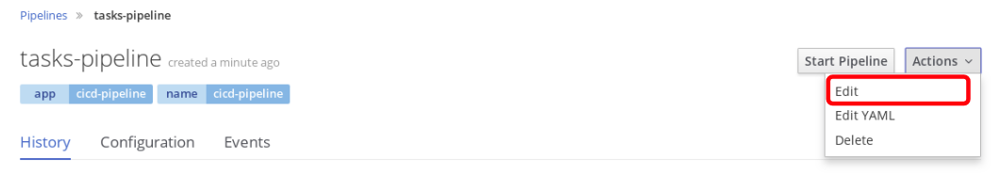

Add OpenSCAP DISA STIG Scan
Add the configuration for the OpenSCAP Scan below to your pipeline text file.
Append to Jenkins Pipeline Configuration
In Builds > Pipelines > tasks-pipeline > Actions > Edit

In your pipeline, verify the following variables are there after the version and mvnCmd definitions. Please fill in the values between the quotes if not done previously.
- ocuser : the openshift user given to you by your insturctor
- ocpass : the openshift password given to you by your insturctor
- ocp : the openshift host given to you by your instuctor
def version, mvnCmd = "mvn -s configuration/cicd-settings-nexus3.xml"
def ocuser = " "
def ocpass = " "
def ocp = " "
For Example:
def version, mvnCmd = "mvn -s configuration/cicd-settings-nexus3.xml"
def ocuser = "user1"
def ocpass = "openshift"
def ocp = "ocp-devsecops.redhatgov.io"
In your pipeline, make sure you replaced the Jenkins agent 'maven' with 'jenkins-slave-image-mgmt'.
pipeline {
agent {
label 'jenkins-slave-image-mgmt'
}
In your pipeline, add the OpenSCAP DISA STIG Scan after the Container Vulnerability Scan Stage.
stage('OSCAP DISA STIG Scan') {
steps {
sh "oc login -u $ocuser -p $ocpass --insecure-skip-tls-verify https://$ocp 2>&1"
sh "sshpass -p $ocpass ssh -oStrictHostKeyChecking=no -t $ocuser@$ocp docker login -u $ocuser -p " + '"$(oc whoami -t)"' + " docker-registry-default.apps.$ocp"
sh "sshpass -p $ocpass ssh -oStrictHostKeyChecking=no -t $ocuser@$ocp docker pull docker-registry-default.apps.$ocp/cicd-$ocuser/jboss-eap70-openshift:1.5"
sh "sshpass -p $ocpass ssh -oStrictHostKeyChecking=no -t $ocuser@$ocp sudo oscap-docker image docker-registry-default.apps.$ocp/cicd-$ocuser/jboss-eap70-openshift:1.5 xccdf eval --profile xccdf_org.ssgproject.content_profile_stig-rhel7-disa --report report.html /usr/share/xml/scap/ssg/content/ssg-rhel7-ds.xml"
}
}
Save your Jenkins file
Run Pipeline
Go to Builds > Pipeline
Click Start Pipeline for the pipeline you just created called tasks-pipeline.
Your pipeline should now execute through all the stages you created.
Go ahead and click View Log. This will take you to the Jenkins logs and you can follow the various stages in your pipeline.
When it asks to promote to stage, go ahead and promote it.

View OpenSCAP DISA STIG Container Scan Report
You can view the security controls from the OpenSCAP Scan on the jenkins pipeline log.
Please ask your instructor on how you can view the full report.
Your report should look similar to the following: OpenScap DISA STIG SCAN report